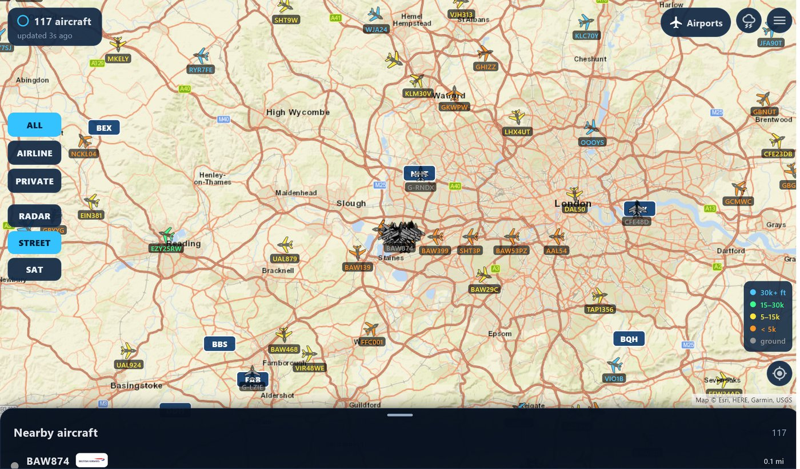
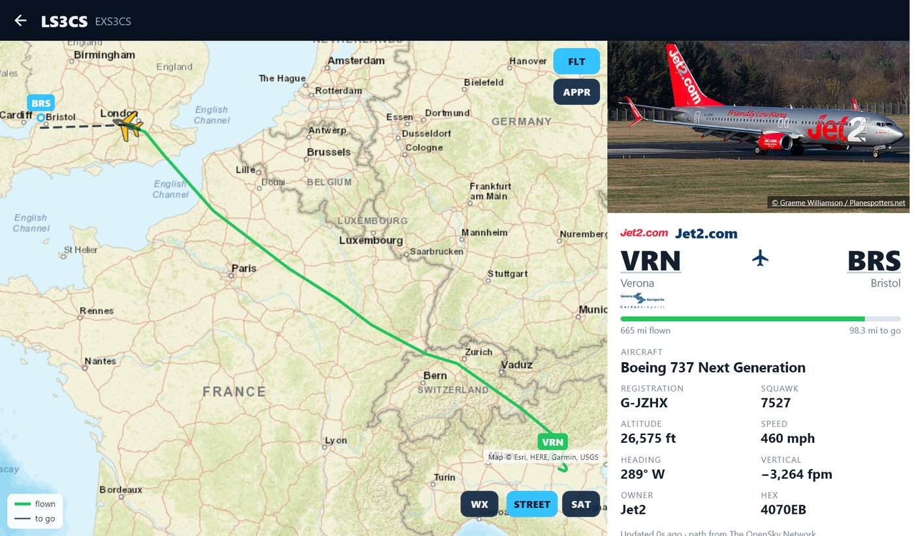
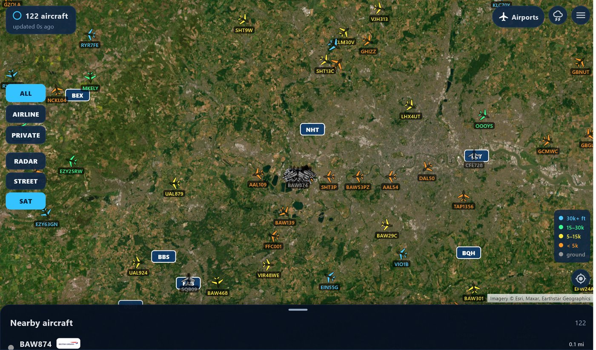
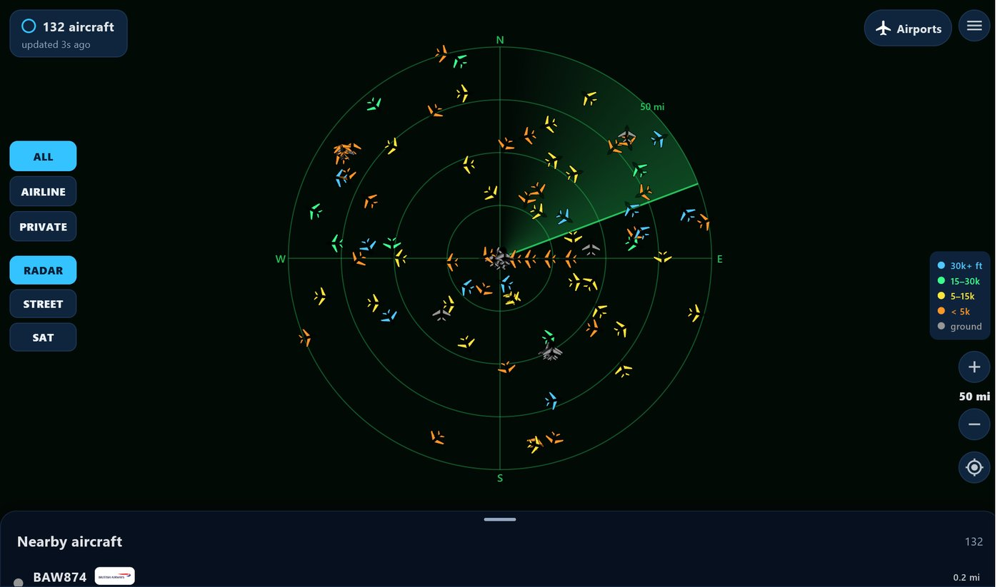
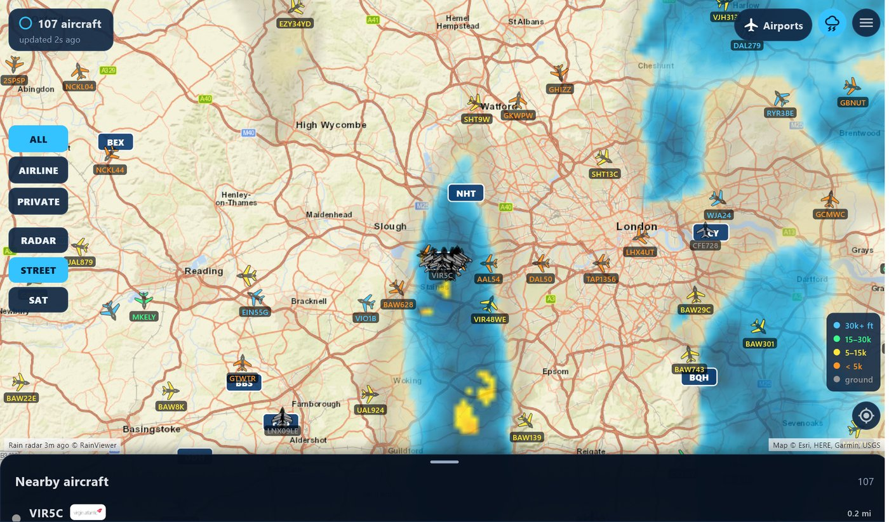
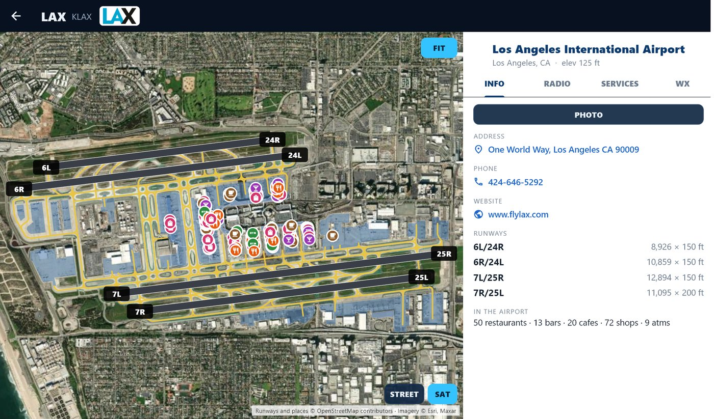
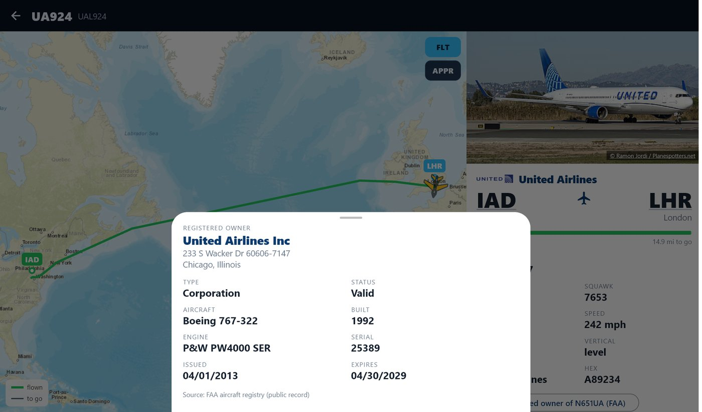

Free Windows app · Version 1.0.4
Live air traffic on your PC.
Every plane around you on a big live map, where it's going, a photo of the actual aircraft, the weather on the way and 9,000+ airports. No account, no ads, no installer.

See it in action
A quick tour of the app
Real app screens · Download MP4
Features
Everything the desk display does, on a big screen






Step by step
Watch how to install it
There's no installer: unzip it and run it. It takes about a minute.
Install
Up and running in a minute
Windows shows a warning the first time because the app is new and doesn't come from the Microsoft Store. That's expected.
You'll need
- A PC running 64-bit Windows 10 or 11
- An internet connection
- 1Click Download for Windows below to get the zip file.
- 2Right-click the zip in your Downloads folder, choose Extract All, and click Extract.
- 3In the new folder, double-click flight_radar.
- 4If a blue "Windows protected your PC" box appears, click More info, then Run anyway.
Keep all the files in the folder together: the app needs them. To pin it, right-click flight_radar and choose Pin to Start.
Support the project
Flight Radar is free. Help keep it that way.
There are no ads, no subscriptions and no accounts. If you enjoy it, a small tip helps pay for future updates and new projects.
Chip in a couple of bucks
Any amount helps. Scan a code with your phone's camera.


More Flight Radar
Also in your pocket and on your desk
FAQ
Questions
Why does Windows warn me about it?
Windows SmartScreen warns about apps that are new and haven't been downloaded many times yet. Click More info and Run anyway. You'll only see it once.
How do I update it?
Download the new zip and extract it over the old folder, or into a new one. Your settings and recent flights are kept.
Does it need an account or subscription?
No. It uses free public services for aircraft positions, routes, maps and weather, with no sign-up.
How does it know where I am?
It asks Windows for your approximate location, if location is turned on. It stays on your PC; the app sends only the area you're looking at to the data services. Without location, drag the map or pick an airport.
Where does the flight data come from?
Aircraft positions come from community ADS-B networks (adsb.lol, with adsb.fi as a backup), fed by volunteers' receivers. Routes come from adsb.im, flight history from the OpenSky Network, aircraft photos from Planespotters.net photographers, owners from the FAA registry, weather from aviationweather.gov and RainViewer, and airport data from OurAirports, the FAA and OpenStreetMap.
Can I use it to fly?
No. Flight Radar is for fun and curiosity. Routes, runways, frequencies and weather come from public and community sources and may be wrong or out of date. Not for navigation.